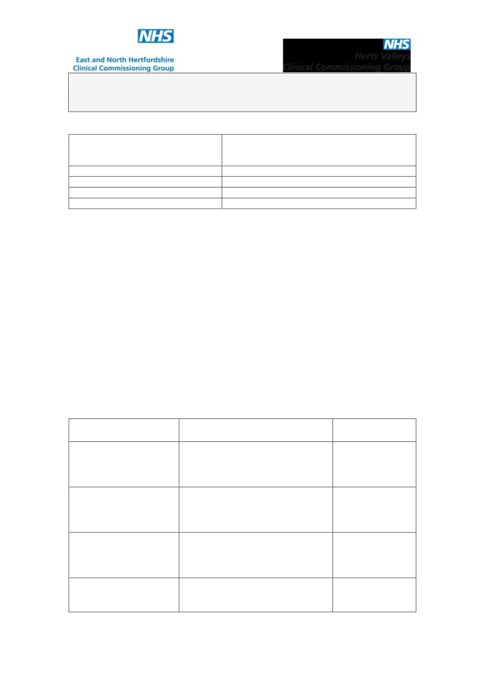
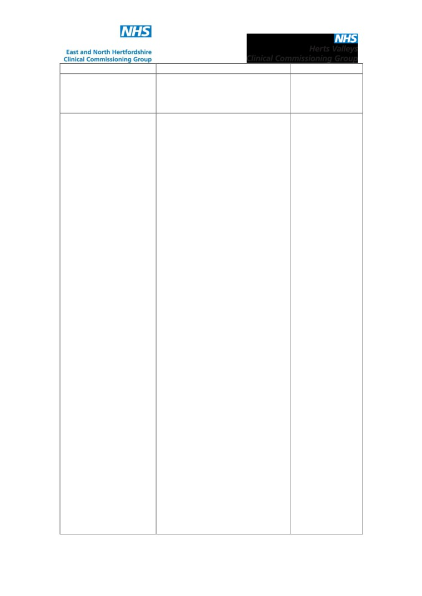
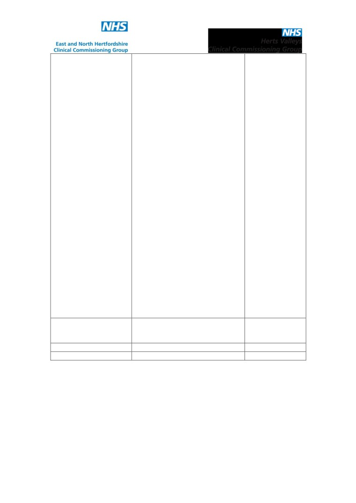
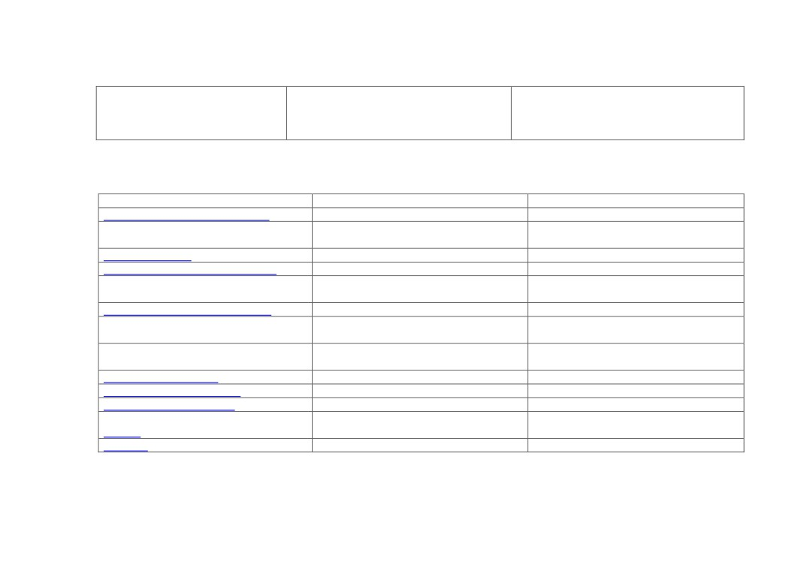
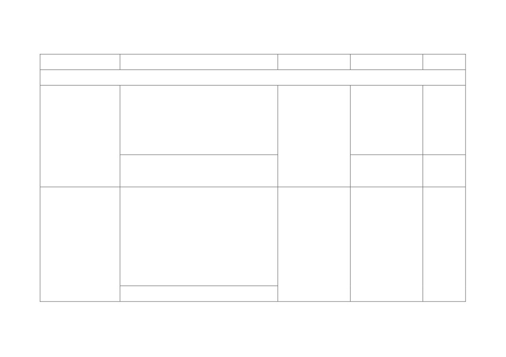
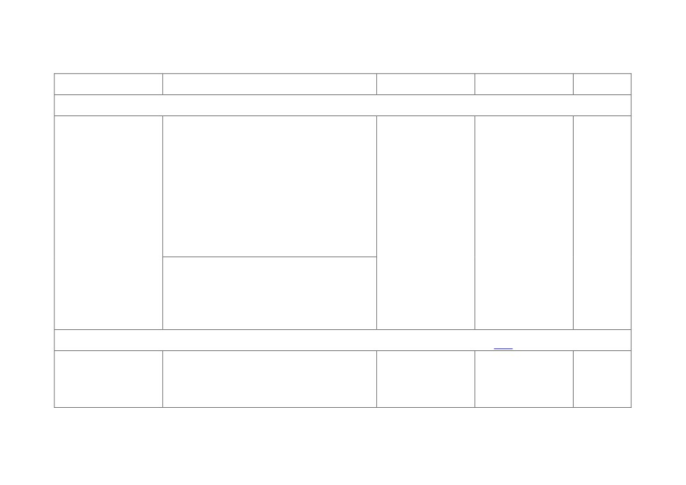
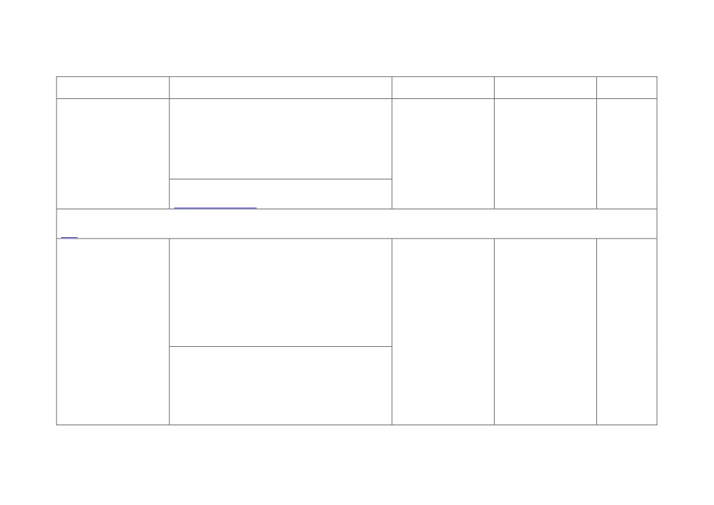
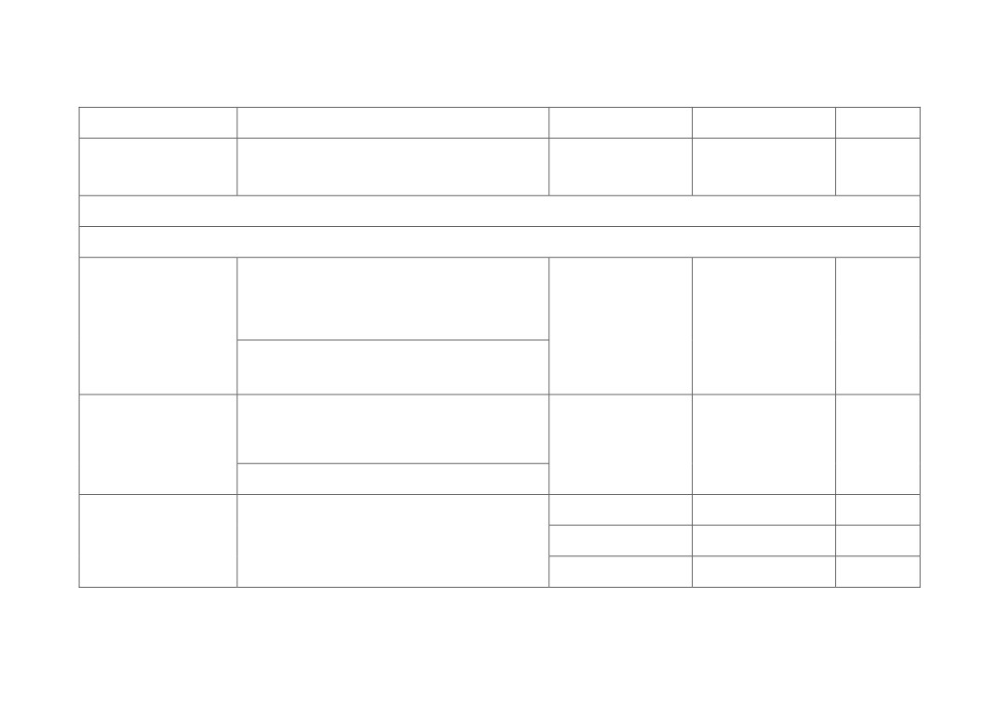
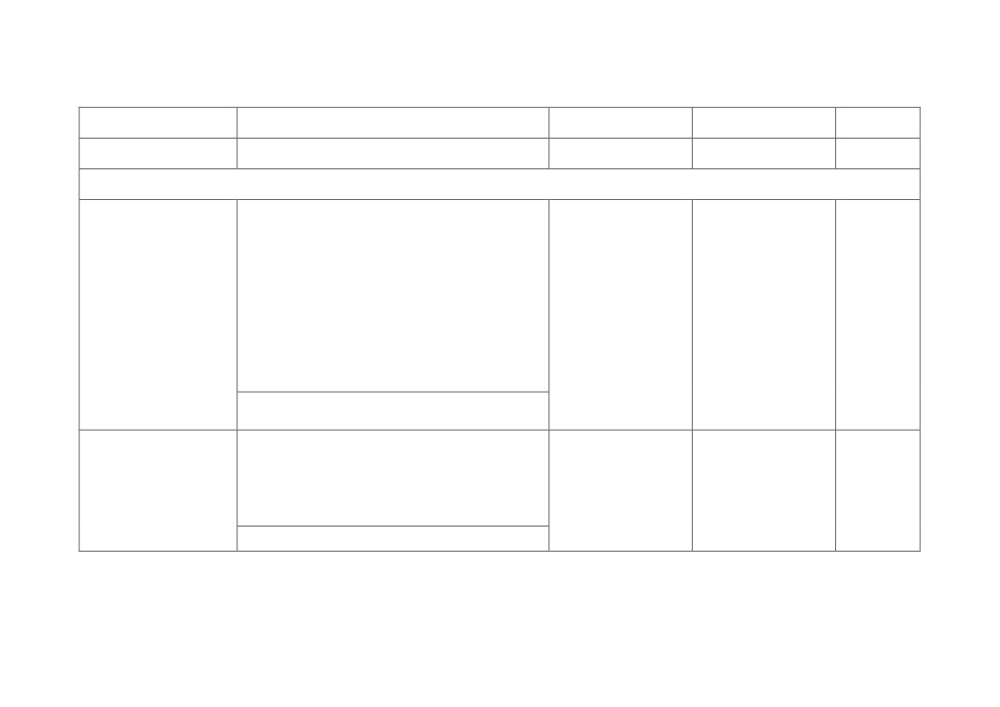

GUIDANCE FOR THE MANAGEMENT OF INFECTION IN
PRIMARY CARE WITHIN HERTFORDSHIRE
Ratifying CCG Board Sub-
Hertfordshire Medicines Management
Committee
Committee on behalf of East and North
Herts CCG and Herts Valleys CCG.
Date of Issue (Version 1)
7th July 2015
Date of Issue (1st review)
21st January 2016
Issue Number
2
Date of Review
2 years from date of issue
East and North Herts and Herts Valley’s CCGs are committed to being organisations within
which diversity, equality and human rights are valued. We will not discriminate either directly
or indirectly and will not tolerate harassment or victimisation in relation to gender, marital
status (including civil partnerships), gender reassignment, disability, race, age, sexual
orientation, religion or belief, trade union membership, status as a fixed-term or part-time
worker, socio-economic status and pregnancy or maternity.
This document was prepared on behalf of East and North Hertfordshire Clinical
Commissioning Group and Herts Valleys Clinical Commissioning Group by the Pharmacy and
Medicines Optimisation Team from East and North Hertfordshire CCG.
This document is available electronically or in a larger font or alternative format on request.
Document History
To replace: Guidance for the Management of Infection in Primary Care within
Hertfordshire November 2014.
Progress
Lead Person & Contact
Date
Number
First Draft
Alison Dossetter (Senior
January 2015
Pharmaceutical Advisor East and
North Herts CCG- 01707
369677)
Second Draft
Alison Dossetter (Senior
April 2015
Pharmaceutical Advisor East and
North Herts CCG- 01707
369677)
Final Draft
Alison Dossetter (Senior
May 2015
Pharmaceutical Advisor East and
North Herts CCG- 01707
369677)
Final Draft (amended)
Alison Dossetter (Senior
June 2015
Pharmaceutical Advisor East and
North Herts CCG- 01707
NOTE: Doses are oral and for adults with normal hepatic/renal function
1
unless otherwise stated. Please refer to latest BNF for further prescribing
information. Published date: July 2015

369677)
Final Draft (amended)
Alison Dossetter (Senior
January 2016
Pharmaceutical Advisor East and
North Herts CCG- 01707
369677)
Circulation List
Fiona Simpson - Head of
Infection Control East and North
Herts and Herts Valleys CCGs
Sheilagh Reavey - Director of
Nursing and Quality East and
North Herts CCG
Jan Norman - Director of
Nursing and Quality Herts
Valleys CCG
Pauline Walton - Assistant
Director/Head of Pharmacy and
Medicines Optimisation Team -
East and North Herts CCG
Rasila Shah - Head of Pharmacy
and Medicines Optimisation
Team Herts Valleys CCG
Dr F M Awad-El-Kariem -
consultant microbiologist East
and North Herts Trust
Andrew Hood - Chief Pharmacist
East and North Herts Trust
David Ladenheim - Antimicrobial
pharmacist East and North Herts
Trust
Dr Prema Singh - consultant
microbiologist West Herts Trust
Martin Keble - Chief Pharmacist
West Hertfordshire Trust
Tejal Vaghela - Antimicrobial
pharmacist West Herts Trust
Dr F Bin-Reza - consultant
microbiologist Princess
Alexandra Hospital
Dr Ed Bosonnet - GP Infection
prevention and Control lead East
and North Herts CCG
Dr Pani Sissou - GP Herts
Valleys CCG
Dr Ashish Shah - GP Prescribing
Lead East and North Herts CCG
Gill Goodlad - Local authority,
Public Health
Sarah Mantle - Lead
NOTE: Doses are oral and for adults with normal hepatic/renal function
2
unless otherwise stated. Please refer to latest BNF for further prescribing
information. Published date: July 2015

InfectionPrevention and Control
Nurse HCT
TF Chan - Chief Pharmacist
Barnet and Chase Farm NHS
Trust
Busola Ade-Ojo-Chief
Pharmacist Princess Alexandra
Hospitals NHS Trust
Nisha Patel - Antimicrobial lead
pharmacist Luton & Dunstable
University Hospitals FT
Simon Wan - Chief Pharmacist
HCT
Janet Howell - Head of
Medicines Management
Hertfordshire Partnership NHS
Trust
Rita Cusumano - Head of
Integrated Clinical Governance
Herts Urgent Care
All pharmacists working for East
and North Herts CCG for onward
distribution to locality prescribing
leads
All pharmacists working for Herts
Valleys CCG for onward
distribution to locality prescribing
leads
All locality prescribing leads for
onward distribution within GP
practices to all prescribers
Policy Precedents
Guidance for the management of
November 2014
infection in primary care within
Hertfordshire
Ratified by HMMC
7th July 2015
Review Date
2 years from date of issue
Produced by the Pharmacy and Medicines Optimisation Team
East and North Hertfordshire Clinical Commissioning Group
NOTE: Doses are oral and for adults with normal hepatic/renal function
3
unless otherwise stated. Please refer to latest BNF for further prescribing
information. Published date: July 2015
GUIDANCE FOR THE MANAGEMENT OF INFECTION
Contents
1. Purpose
5
2. Disclaimer
5
3. Changes from November 2014
5
4. Aims
10
5. Principles of treatment
10
6. Educational resources
11
7. Clostridium difficile infection
11
8. Pneumonia and C-reactive protein (CRP) test
12
9. Restricted antibiotics
13
10. Schools and other childcare settings
14
11. Specific drug warnings
14
a. Co-amoxiclav♣
14
b. Erythromycin
14
c. Flucloxacillin
14
d. Fosfomycin
14
e. Itraconazole
15
f. Nitrofurantoin
15
g. Pivmecillinam
15
h. Quinolones♣
15
i.
Trimethoprim
15
12. Reference sources
16
13. Acknowledgements
17
14. Comments
17
15. Clinical Guidelines
18
a. Upper respiratory tract infections
18
b. Lower respiratory tract infections
20
c. Meningitis
22
d. Urinary tract infections
22
e. Gastro-intestinal tract infections
27
f. Genital tract infections
30
g. Skin
32
h. Viral
37
i.
Dental
38
16. Treatment Algorithms - Management
39
a. Suspected UTI in women (not pregnant)
39
b. Suspected UTI in men
40
c. Suspected UTI in older people (over 65 years)
41
NOTE: Doses are oral and for adults with normal hepatic/renal function
4
unless otherwise stated. Please refer to latest BNF for further prescribing
information. Published date: July 2015
Purpose
To support the appropriate prescribing of antibiotics in primary care.
Disclaimer
Whilst every effort has been made to ensure the accuracy of this guideline, the authors cannot accept any responsibility for any
errors or omissions. The prescriber should be aware of any side effects, drug interactions or patient specific contra-indications as
detailed in the current British National Formulary or the Summary of Product Characteristics.
Changes from November 2014
Addition of choice of antibiotic for the following indications:
o Otitis Externa (acute)
o Bronchiectasis
o UTI in women - no visible haematuria, not pregnant or catheterised
o UTI in women - visible or non visible haematuria, not pregnant
o Asymptomatic bacteriuria in pregnancy
o Catheter in situ
o UTI with catheter
o Pilonidal sinus disease (discharging)
o Post-operative wound infection
Revised or new drug choices for:
Condition
Changed from (November 2014)
Changed to (April 2015)
Otitis media (acute)
Azithromycin 2nd line choice
Azithromycin removed from guidelines
Sinusitis (acute)
Amoxicillin 1st line choice
Amoxicillin 2nd line choice
Bronchitis (acute)
Doxycycline 1st line choice
Doxycycline 2nd line choice and
NOTE: Doses are oral and for adults with normal hepatic/renal function unless otherwise stated. Please refer to latest BNF for
5
further prescribing information. Published date: July 2015
clarithromycin added as a further 2nd line
choice in penicillin allergy
Acute Exacerbation of COPD
Clarithromycin added as further 2nd line
choice
Community acquired pneumonia
Clarithromycin and doxycycline 1st line
Clarithromycin and doxycycline 2nd line
choices
choices
Meningitis
Cefotaxime 2nd line choice
Cefotaxime removed from guidelines
UTI in men
Nitrofurantoin 1st line choice
Nitrofurantoin 2nd line choice and
pivmecillinam added as further 2nd line
choice
UTI - recurrent
Nitrofurantoin added as further 2nd line
choice
Pyelonephritis (acute)
Co-amoxiclav 1st line choice
Co-amoxiclav 2nd line choice and cefalexin
added as a 2nd line option for pregnant
women
Clostridium difficile infection (CDI)
Fidaxomicin added as a further 2nd line
choice
CDI recurrence
Fidaxomicin added as 1st line choice
Helicobacter pylori eradication
Metronidazole added as an option for 1st
line choice in combination with amoxicillin
and clarithromycin added as a further
option for 2nd line choice
Threadworm
Piperazine/senna 1st line choice
Piperazine/senna removed from guidelines
Vaginal candidiasis in pregnancy
Miconazole 2% cream added as a 2nd line
choice
Bacterial vaginosis
Metronidazole gel 1st line choice
Metronidazole gel 2nd line choice
Epididymo-orchitis
Co-amoxiclav 2nd line choice for over 35
Co-amoxiclav removed from guidelines and
years
ofloxacin added as a further 2nd line choice
for over 35 years
NOTE: Doses are oral and for adults with normal hepatic/renal function unless otherwise stated. Please refer to latest BNF for
6
further prescribing information. Published date: July 2015

Pelvic inflammatory disease
Metronidazole plus ofloxacin 1st line
Ceftriaxone plus metronidazole plus
choice and Ceftriaxone plus
doxycycline 1st line choice and
metronidazole plus doxycycline 2nd line
metronidazole plus ofloxacin 2nd line choice
choice
Revised dosage or frequency or duration of treatment for:
Condition
Changed from (November 2014)
Changed to (April 2015)
Community acquired pneumonia
Course length 7 days for CRB65 = 0
Course length 5 days for CRB65 = 0
Community acquired pneumonia
Course length 10 days for CRB65 = 1
Course length 7 to 10 days for CRB65 =
1
UTI in pregnancy
Cefalexin 250mg QDS
Cefalexin 500mg BD
Clostridium difficile infection (CDI)
Metronidazole 400mg
Metronidazole 400mg to 500mg
Helicobacter pylori eradication
Tripotassium dicitratobismuthate 120mg
Tripotassium dicitratobismuthate 240mg
QDS
BD
Vaginal candidiasis in pregnancy
Course length 6 nights
Course length 7 days
Bacterial vaginosis
Course length for stat dose of
Course length for stat dose of
metronidazole 7 days
metronidazole 5 to 7 days
Epididymo-orchitis
Course length for over 35s 10 days
Course length for over 35s 10 to 14
days
Trichomonas vaginalis
Metronidazole 400mg
Metronidazole 400mg to 500mg
Acne (moderate or severe)
Course length 4 to 6 months
Course length up to 6 months
Bites (animal and human)
Metronidazole 400mg
Metronidazole 200mg to 400mg
Dermatophyte infection of the finger or
Amorolfine course length for toes 12
Amorolfine course length for toes 9 to
toe nail
months
12 months
Shingles
Famciclovir 250mg
Famciclovir 500mg
NOTE: Doses are oral and for adults with normal hepatic/renal function unless otherwise stated. Please refer to latest BNF for
7
further prescribing information. Published date: July 2015
Revision / addition of comments or advice:
o
Principles of treatment
o
Educational resources - addition of link to patient information leaflet
o
Clostridium difficile Infection
o
Pneumonia and C-reactive protein (CRP) test
o
Guidance on infection control in schools and other childcare settings
o
Fosfomycin specific drug warning
o
Nitrofurantoin specific drug warning
o
Pivmecillinam specific drug warning
o
Upper Respiratory Tract Infections
o
Pharyngitis / Sore throat / Tonsillitis
o
Otitis media (acute)
o
Sinusitis (acute)
o
Lower Respiratory Tract Infections (LRTIs)
o
Bronchitis (acute)
o
Acute Exacerbation of COPD
o
Community acquired pneumonia
o
Meningitis
o
Urine dipstick testing
o
UTI in pregnancy
o
UTI in children
o
UTI recurrent
o
Pyelonephritis (acute)
o
Prostatitis (acute)
o
Gastroenteritis
o
Clostridium difficile infection (CDI)
o
CDI recurrence
o
Helicobacter pylori eradication
o
Threadworm
o
Diverticulitis (acute)
NOTE: Doses are oral and for adults with normal hepatic/renal function unless otherwise stated. Please refer to latest BNF for
8
further prescribing information. Published date: July 2015
o Vaginal candidiasis
o Vaginal candidiasis in pregnancy
o Bacterial vaginosis
o Chlamydia trachomatis
o Epididymo-orchitis
o Trichomonas vaginalis
o Pelvic inflammatory disease
o Acne (moderate or severe)
o Bites (animal and human)
o Dermatophyte infection of the nail
o Dermatophyte infection of the skin
o Eczema
o Leg ulcers
o PVL
o Shingles
o Treatment algorithms for management of UTI
Changes from April 2015
Revised or new drug choices for:
Condition
Changed from (April 2015)
Changed to (January 2016)
Helicobacter pylori eradication
PPI BD plus tripotassium
PPI BD plus 2 unused antibiotics:
dicitratobismuthate 240mg BD plus 2
amoxicillin 1G BD, metronidazole
unused antibiotics: amoxicillin 1G BD,
400mg BD, tetracycline 500mg QDS,
metronidazole 400mg BD, tetracycline
clarithromycin 500mg BD, levofloxacin
500mg QDS, clarithromycin 500mg BD
250mg BD
NOTE: Doses are oral and for adults with normal hepatic/renal function unless otherwise stated. Please refer to latest BNF for
9
further prescribing information. Published date: July 2015
Aims
The aims of these guidelines, in line with evidence based national guidelines and primary care priorities are to:
Promote the safe, effective and economic use of antibiotics.
Manage the prescribing of antibiotics thus reducing the incidence of antibiotic associated infections such as Clostridium
difficile infection (CDI) and MRSA infection.
Minimise the emergence of bacterial resistance to antibiotics within the community.
Assist prescribers in selecting an appropriate antibiotic for commonly encountered infections.
Principles of treatment
This guidance is based on the best available evidence but professional judgement should always be used and patients
should be involved in the decision making process.
Choices of antibiotic are based on clinical evidence and not on cost as the aim is to reduce the incidence of healthcare
associated infections.
Antibiotics should be initiated as soon as possible in severe infection.
Prescribing of antibiotics should only occur where consideration has been given to the origin of infection, there is a clinical
need and the presence of viral infection such as sore throat, coughs and colds, viral conjunctivitis has been excluded.
Antibiotics should not be prescribed during a telephone consultation apart from in exceptional circumstances.
Consider the use of a delayed prescription for infections such as simple urinary tract infections, acute sore throat, acute
cough, acute sinusitis, common cold.
Where an antibiotic is indicated, the agent chosen should be the narrowest spectrum for the identified condition i.e. avoid
broad spectrum antibiotics such as co-amoxiclav♣, cephalosporins♣ and quinolones♣.
Always prescribe for the shortest duration (using broad spectrum antibiotics for long periods can promote resistance).
Always prescribe generically.
Avoid topical antibiotics unless indicated as they can promote resistance.
Always check for allergy before prescribing an antibiotic.
NOTE: Doses are oral and for adults with normal hepatic/renal function unless otherwise stated. Please refer to latest BNF for
10
further prescribing information. Published date: July 2015
In pregnancy AVOID prescribing tetracyclines, quinolones♣, and high dose metronidazole. If trimethoprim is prescribed in
the first trimester, supplementation with folic acid 5mg is recommended and trimethoprim should not be prescribed to women
who are folate deficient, taking a folate antagonist or have taken trimethoprim within the last year. Short term use of
nitrofurantoin (avoid in 3rd trimester as there is a theoretical risk of neonatal haemolysis) is not expected to cause foetal
problems. The manufacturer of clarithromycin advises against its use in pregnancy, particularly in the first trimester, unless
the potential benefit outweighs the risk.
For recurrent or resistant infection, please contact your local microbiologist for advice.
Educational Resources
A leaflet entitled ‘Treating your Infection’ has been produced by the Royal College of General Practitioners in conjunction
with numerous other national bodies. It gives patients useful information on the duration of upper respiratory tract infections,
what patients can do to ease symptoms and also safety nets for those patients whose condition deteriorates. It is available at
The Royal College of General Practitioners have published a ‘TARGET Antibiotics toolkit’ in conjunction with the Health
Protection Agency and the Antimicrobial Stewardship in Primary Care. It includes training resources, resources for clinicians,
patient information leaflets, antibiotic guidance, a self assessment checklist and audit tools. It is available at the following
Clostridium difficile Infection (CDI)
All antibiotic prescribing should be within the recommendations of this guideline for the shortest period.
When prescribing an antibiotic for any indication in patients who have had a previous Clostridium difficile infection, advice
should be sought from a microbiologist to avoid any potential relapse.
Antibiotics that are associated with Clostridium difficile infection are highlighted in this guideline by the following symbol: ♣
and should be avoided in ‘at risk’ groups such as the elderly and those in institutions.
Current evidence has shown that clindamycin♣ and second/third generation cephalosporins♣ such as cefuroxime♣,
cefixime♣, cefotaxime♣ and ceftriaxone♣ are significantly more likely to cause CDI. Anecdotal evidence has also implicated
NOTE: Doses are oral and for adults with normal hepatic/renal function unless otherwise stated. Please refer to latest BNF for
11
further prescribing information. Published date: July 2015
agents such as quinolones♣, first generation cephalosporins♣ and co-amoxiclav♣. These agents should therefore be used
sparingly, especially in the elderly and for patients who live in institutions where CDI is present. They should also be avoided
in patients who have previously been treated for CDI.
There is evidence that proton pump inhibitors (PPIs) increase the susceptibility to Clostridium difficile infection and the
prescribing of PPIs should therefore be considered carefully in at risk groups of patients and only be prescribed where there
is a clear clinical indication. There should be a regular review of the ongoing need for a PPI. Guidance on the prescribing of
PPIs to minimise the risk of Clostridium difficile infection can be found at: ENHCCG and HVCCG and guidance on the
prescribing of PPIs in dyspepsia in adults is available at: Dyspepsia
Where possible, the prescriber should be guided by laboratory results. Where this is not possible a narrow spectrum
antibiotic should be selected.
Pneumonia and C-reactive protein (CRP) test
NICE published a guideline in December 2014 on the treatment of pneumonia in both the community and hospital settings. In
primary care, the majority of patients without pneumonia present with symptoms of chest infection, and without access to chest X-
ray it is sometimes difficult to determine if symptoms are caused by pneumonia or a lower respiratory tract infection of which the
latter will resolve without antibiotic treatment. Antibiotics will benefit those patients who have a bacterial infection but will have no
effect on those with a viral infection and may actually cause harm.
NICE are therefore recommending that in cases where patients present with symptoms of lower respiratory tract infection and
pneumonia is not evident after clinical assessment, GPs should consider carrying out a CRP test if it is not clear whether antibiotics
should be prescribed or not. The CRP test is an important tool that GPs can use and still be confident they are offering patients the
best treatment whilst reducing their antibiotic prescribing. The results of the CRP test can be used to guide antibiotic prescribing as
follows:
Do not routinely offer antibiotic treatment if the CRP concentration is less than 20mg/litre.
Consider a delayed prescription if the CRP concentration is between 20mg/litre and 100mg/litre.
Offer antibiotic therapy if the CRP concentration is greater than 100mg/litre.
The full guideline can be found at the following link: http://www.nice.org.uk/guidance/cg191.
NOTE: Doses are oral and for adults with normal hepatic/renal function unless otherwise stated. Please refer to latest BNF for
12
further prescribing information. Published date: July 2015
Restricted antibiotics
These antibiotics are significantly more likely to cause CDI and are therefore restricted. They are marked by the following symbol: ♣
and include cephalosporins♣, quinolones♣ and co-amoxiclav♣. Prescribers are reminded that recommendations to prescribe
restricted antibiotics appear in the following areas only:
Cephalosporins♣:
1st line in epididymo-orchitis
1st line in Pelvic inflammatory disease (PID) - high risk of gonorrhoea
2nd line in UTI in pregnancy
2nd line in Asymptomatic bacteriuria in pregnancy
2nd line acute pyelonephritis (pregnant)
Quinolones♣:
1st line in acute pyelonephritis
1st line in acute prostatitis
2nd line in Pelvic inflammatory disease (PID)
2nd line in diverticulitis
2nd line in epididymo-orchitis
2nd line in Helicobacter pylori eradication
Co-amoxiclav♣:
1st line in diverticulitis
1st line in bites
1st line in “dirty” post op wound infection
2nd line in acute pyelonephritis
2nd line in acute sinusitis (persistent symptoms)
2nd line in acute exacerbation of COPD (treatment failure)
2nd line in UTI in children (upper UTI)
2nd line in cellulitis (facial)
NOTE: Doses are oral and for adults with normal hepatic/renal function unless otherwise stated. Please refer to latest BNF for
13
further prescribing information. Published date: July 2015
Guidance on Infection Control in Schools and Other Childcare Settings
Public Health England (PHE) have issued specific guidance to prescribers on how such infections should be managed and advice
PHE operate a website on ‘microbes’ that can be used in both primary and secondary schools. Plans and activities have been
designed to complement the national curriculum and further information can be found at: e-Bug.
Specific Drug Warnings - Refer to current BNF for full prescribing information
Co-amoxiclav♣
The Committee on the Safety of Medicines (CSM) has advised that cholestatic jaundice can occur either during or shortly after
treatment. An epidemiological study has shown that the risk of acute liver toxicity was about 6 times greater with co-amoxiclav than
with amoxicillin. Cholestatic jaundice is more common in patients over 65 and in men and rarely occurs in children. Jaundice is
usually self-limiting and very rarely fatal. Duration of treatment should not usually exceed 14 days.
Erythromycin
Erythromycin interacts with many other medications, the majority of which are classified by the BNF as ‘potentially hazardous’.
Please see appendix 1: interactions (macrolides) of the current BNF for further information.
Flucloxacillin
The CSM has advised that very rarely cholestatic jaundice and hepatitis may occur up to 2 months after treatment with flucloxacillin
has been stopped. Administration for greater than 2 weeks and increasing age are risk factors. Flucloxacillin should not be used in
patients with a history of hepatic dysfunction associated with flucloxacillin and should be used with caution in patients with hepatic
impairment.
Fosfomycin
Fosfomycin is a bactericidal antibacterial indicated for the treatment of lower UTI due to extended-spectrum beta-lactamase (ESBL)
-producing micro-organisms on the advice of a consultant microbiologist. It is licensed in the UK but not actively marketed. Supplies
therefore need to be imported and it becomes an unlicensed product as a result. Full prescribing information is available on
request.
NOTE: Doses are oral and for adults with normal hepatic/renal function unless otherwise stated. Please refer to latest BNF for
14
further prescribing information. Published date: July 2015
Itraconazole
Following rare reports of heart failure, the CSM has advised caution when prescribing itraconazole to patients at high risk of heart
failure. This includes patients who are receiving high doses and longer treatment courses, older patients, those with cardiac
disease and patients receiving treatment with negative inotropic drugs such as calcium channel blockers. Itraconazole should be
avoided in patients with ventricular dysfunction or a history of heart failure unless the infection is serious.
Nitrofurantoin
Nitrofurantoin should not be used regularly if eGFR (estimated Glomerular Filtration Rate) < 45ml/minute/1.73m2. However, it may
be used for short courses of 3 to 7 days in those with an eGFR between 30 and 44ml/minute/1.73m2. Long term use of
nitrofurantoin is not advisable as it can cause pulmonary fibrosis, hepatic problems and peripheral neuropathy. Short term use of
nitrofurantoin is unlikely to cause problems to the foetus but the BNF advises to avoid at term.
Pivmecillinam
Pivmecillinam is a penicillin-like beta-lactam antibiotic that can be used to treat UTIs. It is highly active against many gram negative
bacteria including Escherichia coli, klebsiella, enterobacter and salmonellae. It is not active against Pseudomonas aeruginosa or
enterococci. It should NOT be taken by patients who are allergic to penicillins/cephalosporins, patients with oesophageal strictures
or gastro-intestinal obstruction and patients with carnitine deficiency. Avoid use with patients taking sodium valproate or valproic
acid. For a full list of warnings and side effects, please refer to the latest BNF and the summary of product characteristics for
Selexid - http://www.medicines.org.uk/emc/medicine/2566.
Quinolones♣
The CSM has warned that quinolones may induce convulsions in patients with or without a history of convulsions. Tendon damage
(including rupture) has been reported rarely in patients receiving quinolones. Tendon rupture may occur within 48 hours of starting
treatment and up to several months after stopping a quinolone. Quinolones are contra-indicated in patients with a history of tendon
disorders. Patients over 60 years or those concomitantly taking corticosteroids are at increased risk of tendon damage.
Trimethoprim
Trimethoprim should not be used in those patients taking methotrexate or those who have a low folate status e.g. those who take
folate antagonists such as antiepileptics or those who have a low dietary folate intake unless they are taking folate supplements.
NOTE: Doses are oral and for adults with normal hepatic/renal function unless otherwise stated. Please refer to latest BNF for
15
further prescribing information. Published date: July 2015
Reference Sources Used
Public Health England et al. Patient leaflet ‘treating your Infection’ - published 2014. Accessed January 2015.
Royal College of General Practitioners. TARGET Antibiotics toolkit. Accessed January 2015.
National Institute for Health and Care Excellence. CG184 Dyspepsia and Gastro oesophageal reflux disease - published
September 2014. Accessed January 2015.
Leo Laboratories Ltd. Summary of Product Characteristics (SPC) Selexid www.medicines.org.uk. Last revised April 2015.
Accessed June 2015.
National Institute for Health and Care Excellence. CG69 Prescribing of antibiotics for self-limiting respiratory tract infections -
July 2008. Accessed January 2015
NICE Clinical Knowledge Summaries. Current evidence references for individual infections -a service provided by the
National Institute for Health and Care Excellence. Accessed January 2015.
National Institute for Health and Care Excellence. CG101 Management of Chronic Obstructive Pulmonary Disease in adults
in Primary and Secondary Care - June 2010. Accessed January 2015.
National Institute for Health and Care Excellence. CG191 Pneumonia: Diagnosis and Management of community and
hospital acquired pneumonia in adults - December 2014. Accessed January 2015.
British Thoracic Society. Community Acquired Pneumonia in Adults Guideline - updated 2015. Accessed January 2015.
Public Health England. Meningococcal Disease - published July 2014. Accessed January 2015.
National Institute for Health and Care Excellence. CG102 Bacterial meningitis and meningococcal septicaemia - September
2010. Accessed January 2015.
National Institute for Health and Care Excellence. QS90 Urinary tract infections in adults - June 2015. Accessed June 2015.
British Infection Association and Health Protection Agency. Diagnosis of UTI - Quick reference guide for primary care -
published April 2011. Accessed January 2015.
Public Health England. Extended spectrum beta lactamases - July 2014. Accessed January 2015.
National Institute for Health and Care Excellence. KTT10 Three day courses of Antibiotics for Uncomplicated Urinary Tract
Infection - January 2015. Accessed January 2015.
Scottish Intercollegiate Guidelines Network. SIGN 88 Management of suspected bacterial urinary tract infection in adults -
updated July 2012. Accessed January 2015.
NOTE: Doses are oral and for adults with normal hepatic/renal function unless otherwise stated. Please refer to latest BNF for
16
further prescribing information. Published date: July 2015
National Institute for Health and Care Excellence. CG54 Urinary tract infection in children - August 2007. Accessed January
2015.
Public Health England. Clostridium difficile infection - published July 2014. Accessed January 2015.
Public Health England. Helicobacter pylori - updated September 2012. Accessed January 2015.
British Association for Sexual Health and HIV. Current guidelines for individual genital tract infections. Accessed January
2015.
Public Health England. Management and laboratory diagnosis of abnormal vaginal discharge - Updated July 2013.
Accessed January 2015.
Public Health England. Chlamydia - Updated November 2014. Accessed January 2015.
NHS Hertfordshire Primary Care Medicines Management Group. Why are fungal nail infections not routinely treated by the
NHS in Hertfordshire? Published July 2012. Accessed January 2015.
Public Health England. Diagnosis and Management of PVL - Staphylococcus aureus Infections Quick reference guide for
primary care - Published May 2009. Accessed January 2015.
.British National Formulary No 68 - September 2014. Accessed January 2015.
UK Medicines Information. Clostridium difficile infection - which antimicrobials are implicated? Q&A 242.2aNovember 2012.
Accessed January 2015.
Public Health England. Management of Infection Guidance for Primary Care - for Consultation and Local Adaptation -
October 2014. Accessed January 2015.
Acknowledgements
The authors would like to thank the many health care professionals whose insightful and valuable comments helped to shape this
document.
Other NHS organisations.
Comments
Comments are welcome and should be directed to Alison Dossetter - Senior Pharmaceutical Adviser and Pharmacy and Medicines
NOTE: Doses are oral and for adults with normal hepatic/renal function unless otherwise stated. Please refer to latest BNF for
17
further prescribing information. Published date: July 2015

Infection
Rationale/Comments
1st Line Choice
2nd Line Choice
Duration
The majority of sore throats are viral but there is clinical
overlap between viral and streptococcal infections.
Consider delayed script as antibiotics generally shorten
duration of symptoms by 8 hours. Patients with 3 or 4
Centor criteria (history of fever, purulent or enlarged
Do not routinely
Phenoxymethylpenicillin
10 days
tonsils, cervical adenopathy, absence of cough) or
prescribe antibiotics.
500mg QDS
Pharyngitis / sore throat /
history of otitis media may benefit from antibiotics.
Consider a delayed
tonsillitis
Prescribe an antibiotic for those with features of marked
prescribing strategy.
systemic upset, an increased risk of serious
Majority of infections are
complications and patients with valvular heart disease.
viral and resolve within 1
week.
Clarithromycin
5 days
500mg BD
60% of attacks resolve within 24 hours without
antibiotics. They only reduce pain at 2 days and do not
prevent deafness. Offer an immediate antibiotic
prescription if:
Patient is systemically unwell
Patient at high risk of serious complications
Do not routinely
Amoxicillin or
Patients with symptoms for > 4 days and are not
prescribe antibiotics. For
clarithromycin (penicillin
Otitis media (acute)
improving.
acute attacks with no
allergy). Consult current
5 days
Consider 2 or 3 day delayed prescription or immediate
systemic features advise
BNF for Children for
antibiotics for pain relief if:
paracetamol or
doses.
< 2 years with bilateral acute otitis media (AOM)
ibuprofen for pain.
or bulging membrane and ≥ 4 marked symptoms
All ages with otorrhoea
NOTE: Doses are oral and for adults with normal hepatic/renal function unless otherwise stated. Please refer to latest BNF for
18
further prescribing information. Published date: July 2015
Infection
Rationale/Comments
1st Line Choice
2nd Line Choice
Duration
Remove or treat any aggravating or precipitating factors.
Treat inflammation with a topical ear preparation and
consider cleaning the external auditory canal if there is
sufficient ear wax or debris to obstruct topical
medication. Only consider adding an oral antibiotic for
patients with severe infection. If an oral antibiotic is
Acetic Acid 2% Spray
required, consider a 7 day course of flucloxacillin or
Do not routinely
TDS. For more severe
clarithromycin if the patient is penicillin allergic.
prescribe oral antibiotics
cases (pain, deafness,
Otitis Externa (acute)
7 days
Do NOT prescribe chloramphenicol ear drops as they
and advise use of
discharge) consider a
can cause dermatitis in about 10% of patients.
adequate analgesia.
topical antibiotic with or
Do NOT prescribe fluoroquinolone♣ ear drops
without a corticosteroid.
(ciprofloxacin♣ or ofloxacin♣) as they are unlicensed.
Fluoroquinolone♣ eye drops are also unlicensed for use
in the ear.
Many attacks are viral and symptomatic benefit of
antibiotics is small - 80% resolve within 14 days without
Do not routinely
antibiotics. Consider an immediate script if patient is
prescribe antibiotics and
Amoxicillin 500 mg TDS
systemically unwell, has co-morbidities or when purulent
advise use of adequate
or Clarithromycin 500mg
nasal discharge is present.
analgesia. Only
BD or doxycycline
prescribe antibiotics for
200mg stat then 100mg
those at high risk of
OD. Consider
Sinusitis (acute)
complications or when
erythromycin for
7 days
acute bacterial sinusitis
pregnant women and
is suspected.
co-amoxiclav♣ for
persistent symptoms.
NOTE: Doses are oral and for adults with normal hepatic/renal function unless otherwise stated. Please refer to latest BNF for
19
further prescribing information. Published date: July 2015
Infection
Rationale/Comments
1st Line Choice
2nd Line Choice
Duration
LOWER RESPIRATORY TRACT INFECTIONS Low doses of penicillins are more likely to select out resistance. Do NOT use quinolones first line due to poor
pneumococcal activity. Reserve all quinolones for proven resistant organisms. For people presenting with symptoms of LRTI and in whom after clinical
assessment a diagnosis of pneumonia has not been made and it is not clear whether antibiotics should be prescribed, NICE have recommended that a point
of care C-reactive protein test (CRP) be considered. Do NOT routinely offer antibiotics if CRP<20mg/litre, consider a delayed prescription if CRP is between
20mg/litre and 100mg/litre and offer antibiotic therapy if CRP is > 100mg/litre. See individual pneumonia section at the beginning of the document for more
details.
Send sputum for culture and sensitivity testing
BEFORE starting antibiotics. If there is no previous
bacteriology available, promptly prescribe an antibiotic
as indicated and do not await the results of culture.
Penicillin allergy
Review the response to empirical treatment when
Bronchiectasis (infective
Clarithromycin 500mg
culture and sensitivity results are available. . If culture
exacerbation of non CF
Amoxicillin 500mg TDS
BD or Doxycycline
10 to 14 days
and sensitivity results are available, prescribe according
patients)
200mg stat then 100mg
to advice or according to the CKS and BTS links below.
OD
Antibiotics should be reserved for patients where there is
a risk of serious harm from even a modest deterioration
in their chronic condition. The benefits of antibiotics are
marginal in otherwise healthy adults. The use of a
delayed prescribing tactic and leaflets explaining the
nature of the illness and why antibiotics are not
Doxycycline 200mg stat
necessary, may be helpful. Consider immediate
Bronchitis (acute)
then 100mg OD or
antibiotics if > 80 years and ONE of: hospitalisation in
Amoxicillin 500mg TDS
5 days
clarithromycin 500mg
last year, oral steroids, diabetic, congestive heart failure
BD
OR > 65 years with 2 of above.
NOTE: Doses are oral and for adults with normal hepatic/renal function unless otherwise stated. Please refer to latest BNF for
20
further prescribing information. Published date: July 2015
Infection
Rationale/Comments
1st Line Choice
2nd Line Choice
Duration
Treat exacerbations promptly with antibiotics if purulent
Clarithromycin 500mg
sputum or clinical signs of pneumonia. Risk factors for
BD or
antibiotic resistant organisms include co-morbidities,
severe COPD, frequent exacerbations or antibiotic
Co-amoxiclav♣ 625mg
treatment within last 3 months. Oral steroids may be
TDS (only if patient has
Acute exacerbation of
Amoxicillin 500mg TDS
considered in conjunction with antibiotics where
antibiotic resistance
COPD
or Doxycycline 200mg
factors such as
5 days
increased breathlessness interferes with the activities of
daily living.
stat then 100mg OD
comorbid disease,
severe COPD, frequent
exacerbations or
antibiotic use in the last
3 months)
Start antibiotics immediately. Use CRB65 score to
help guide and review.
0 = suitable for home treatment.
1-2 = hospital assessment or admission.
If CRB65 score = 0
Clarithromycin 500mg
3-4 = Urgent admission.
Amoxicillin 500mg TDS
BD or Doxycycline
Each scores 1: Confusion (AMT<8); Respiratory rate >
5 days
200mg stat then 100mg
30/minute; BP systolic <90 or diastolic ≤60; Age > 65.
OD
Community acquired
Give immediate IM Benzylpenicillin or oral amoxicillin
pneumonia - treatment in
(1G) or clarithromycin (500mg) in penicillin allergy if
the community
delayed admission or life threatening.
If CRB65 score = 1 and
patient at home
Amoxicillin 500mg TDS
plus Clarithromycin
7 to 10 days
500mg BD or
doxycycline 200mg stat
then 100mg OD
NOTE: Doses are oral and for adults with normal hepatic/renal function unless otherwise stated. Please refer to latest BNF for
21
further prescribing information. Published date: July 2015

Infection
Rationale/Comments
1st Line Choice
2nd Line Choice
Duration
MENINGITIS
Transfer all patients to hospital immediately.
NICE recommends that children and young people with
suspected bacterial meningitis without non-blanching
rash should be transferred directly to secondary care
and not given parenteral antibiotics. If urgent transfer is
not possible then antibiotics should be administered.
For suspected meningococcal disease (meningitis with
Withhold benzylpenicillin
Adults and children
non-blanching rash or meningococcal septicaemia),
only in children and
aged 10 years and over
parenteral antibiotics should be given at the earliest
young people who have
Benzylpenicillin IV
Suspected meningococcal
opportunity but transfer to secondary care should not be
a clear history of
(preferable) or IM
disease
delayed in order to give the parenteral antibiotics.
anaphylaxis after a
1200mg, children aged
previous dose; a history
1 to 9 years 600mg,
Secondary prevention should only be prescribed after
of a rash following
children aged under 1
consulting a public health doctor
penicillin is not a
year 300mg
contraindication.
URINARY TRACT INFECTIONS Nitrofurantoin is usually first line but is contraindicated if eGFR is < 45ml/minute/1.73m2 (but may be used for short courses
of 3 to 7 days in patients with an eGFR of 30-44ml/minute). Advice on when to perform a urine dipstick test can be found here.
UTI in women (all ages
An antibiotic should be offered when symptoms are
Trimethoprim 200mg BD
from 14 years onwards)
moderate or severe. Offer a 5 to 10 day course in
or Pivmecillinam 400mg
with no visible haematuria,
women with impaired renal function, an abnormal urinary
Nitrofurantoin 100mg
stat then 200mg TDS
3 days.
not pregnant or
tract or immunosuppression such as poorly controlled
BD (MR) or 50mg QDS
(where sensitivities
catheterised
diabetes. Send cultures for women who have impaired
available)
renal function, an abnormal urinary tract or are
NOTE: Doses are oral and for adults with normal hepatic/renal function unless otherwise stated. Please refer to latest BNF for
22
further prescribing information. Published date: July 2015
Infection
Rationale/Comments
1st Line Choice
2nd Line Choice
Duration
immunosuppressed. Do not send cultures for
uncomplicated UTI. If symptoms of a UTI persist
following treatment, send urine for culture and sensitivity
and adjust treatment as necessary. If a multi-resistant
organism is cultured, seek specialist advice as an
increased incidence of UTIs caused by community multi-
resistant ESBLs has been reported. Dipstick testing can
be used to guide treatment in women < 65 years with
mild or ≤ 2 symptoms of UTI. Dipstick testing is
unreliable in the > 65 year group and should be used
with careful discretion to guide treatment decisions in
otherwise healthy women over 65 years.
Treatment Algorithm - under 65
Treatment Algorithm - over 65
MSU should always be taken to confirm sensitivity.
Offer a 5 to 10 day course in women with impaired renal
function, an abnormal urinary tract or
immunosuppression such as poorly controlled diabetes.
Trimethoprim 200mg BD
UTI in women (all ages
If a multi-resistant organism is cultured, seek specialist
or Pivmecillinam 400mg
from 14 years onwards)
Nitrofurantoin 100mg
advice as an increased incidence of UTIs caused by
stat then 200mg TDS
3 days
with haematuria and not
BD (MR) or 50mg QDS
community multi-resistant ESBLs has been reported.
(where sensitivities
pregnant
available)
NOTE: Doses are oral and for adults with normal hepatic/renal function unless otherwise stated. Please refer to latest BNF for
23
further prescribing information. Published date: July 2015
Infection
Rationale/Comments
1st Line Choice
2nd Line Choice
Duration
MSU should always be taken to confirm sensitivity.
Do not use dipstick testing to screen for bacterial
UTI at any antenatal visit. A further MSU should be
sent 7 days after treatment has finished as a test of
cure. If treating with trimethoprim, give folic acid 5mg
daily during first trimester and do not give trimethoprim if
folate deficiency is suspected or woman is taking a
folate antagonist. Do not use nitrofurantoin in women
who are G6PD deficient. Short term use of nitrofurantoin
is unlikely to cause problems to the foetus. Cefalexin♣ is
Trimethoprim 200mg BD
less preferred due to concerns that broad spectrum
Nitrofurantoin 50mg
(off label use) or
UTI in pregnancy
7 days
antibiotics increase the risk of Clostridium difficile which
QDS
Cefalexin♣ 500mg BD
can be life threatening in pregnant women and also
(less preferred)
because of the risk of resistant UTIs. Amoxicillin is only
recommended if the organism is susceptible as
resistance is common.
Screen for asymptomatic bacteriuria at the first antenatal
visit by sending urine for culture. If asymptomatic
Nitrofurantoin 100mg
Asymptomatic bacteriuria
bacteriuria is found, send a second sample for culture
MR BD or 50mg QDS or
in pregnancy (only treat
and repeat urine culture at each antenatal visit until
Amoxicillin 500mg TDS
Trimethoprim 200mg BD
7 days
when sensitivities are
delivery. If the second sample confirms asymptomatic
(off label use) or
known)
bacteriuria, treat with an antibiotic. If treating with
Cefalexin♣ 500mg BD
trimethoprim, give folic acid 5mg daily during first
(less preferred)
trimester and do not give trimethoprim if the woman is
NOTE: Doses are oral and for adults with normal hepatic/renal function unless otherwise stated. Please refer to latest BNF for
24
further prescribing information. Published date: July 2015

Infection
Rationale/Comments
1st Line Choice
2nd Line Choice
Duration
folate deficient, taking a folate antagonist or has taken
trimethoprim within the last year. Do not use
nitrofurantoin in women who are G6PD deficient or are
near to term. Cefalexin♣ is less preferred due to
concerns that broad spectrum antibiotics increase the
risk of Clostridium difficile which can be life threatening
in pregnant women and also because of the risk of
resistant UTIs.
Catheter in situ: Antibiotics will not eradicate asymptomatic bacteriuria. Only treat if patient is systemically unwell or pyelonephritis is suspected. Do not
CSU should always be taken to confirm sensitivity.
NEVER use dipstick testing to diagnose UTI in
catheterised patients. Change long term indwelling
catheters before starting antibiotic treatment. Measures
to prevent UTI in patients with catheters include review
of need for catheter, prevention of infection and
awareness of measures which shouldn’t be used such
as prophylactic antibiotics, bladder installations and
washouts and topical antibiotics or antiseptics applied
Nitrofurantoin 100mg
UTI with catheter
directly to the catheter, urethra or meatus. Daily washing
Trimethoprim 200mg BD
7 days
BD MR or 50mg QDS
of the meatus with soap and water is sufficient.
NOTE: Doses are oral and for adults with normal hepatic/renal function unless otherwise stated. Please refer to latest BNF for
25
further prescribing information. Published date: July 2015
Infection
Rationale/Comments
1st Line Choice
2nd Line Choice
Duration
MSU should always be taken to confirm sensitivity.
Consider prostatitis.
Nitrofurantoin 100mg
BD (MR) or 50mg QDS
or Pivmecillinam 400mg
UTI in men
Trimethoprim 200mg BD
7 days
stat then 200mg TDS
(where sensitivities
Treatment Algorithm - under 65
available)
Treatment Algorithm - over 65
Children < 3 months - Refer for emergency assessment
but do not take an MSU as this will not alter
management in primary care.
Children 3 months to 3 years - Urgently refer those
children at high risk for serious illness and consider
referring those at intermediate risk for serious illness.
Nitrofurantoin (see BNF
For all other children, treat with antibiotics whilst
awaiting results of urine culture.
for children for doses) or
UTI in children ( ≤ 16
Trimethoprim (see BNF
Co-amoxiclav♣ (for
3 days
Children over 3 years - Urgently refer those children at
years)
for children for doses)
upper UTI and treat for
high risk for serious illness and consider referring those
7-10 days)
at intermediate risk for serious illness. For all other
children, send an MSU before treating with an antibiotic.
Consider prophylactic treatment when there is
unacceptable discomfort or disruption to daily life. Offer
UTI - recurrent (≥ 3 per
a script for stand-by treatment before considering
Trimethoprim 100mg
Nitrofurantoin 50mg to
year) in non-pregnant
prophylactic antibiotics. Use a STAT dose of
6 month trial
nocte
100mg nocte
women over 14 years
trimethoprim 100mg post coital if recurrent infection is
associated with sexual intercourse (off label use and
within 2 hours of sexual intercourse). Use a nightly
NOTE: Doses are oral and for adults with normal hepatic/renal function unless otherwise stated. Please refer to latest BNF for
26
further prescribing information. Published date: July 2015
Infection
Rationale/Comments
1st Line Choice
2nd Line Choice
Duration
prophylactic dose for recurrent infection NOT associated
with sexual intercourse. Long term use of nitrofurantoin
is not advisable as it can cause pulmonary fibrosis,
hepatic problems and peripheral neuropathy.
Ciprofloxacin♣ 500mg
MSU should always be taken to confirm sensitivity. If
7 days
BD
no response within 24 hours or there is clinical
deterioration, arrange for admission.
Co-amoxiclav♣ 625mg
14 days
Pyelonephritis (acute)
TDS
For pregnant women
10 to 14 days
Cefalexin♣ 500mg BD
MSU should always be taken to confirm sensitivity.
4 weeks treatment may prevent chronic infection.
Quinolones♣ are more effective as they achieve higher
prostate levels. If patient is sexually active, chlamydia
Ciprofloxacin♣ 500mg
Trimethoprim 200mg BD
Prostatitis (acute)
needs to be excluded
4 weeks
BD
(off label use)
GASTRO-INTESTINAL TRACT INFECTIONS
Antibiotics are not recommended for adults with diarrhoea of unknown pathology. Evidence from 3 small randomised
controlled trials (RCTs) suggests they have minimal benefits, there is a risk of serious adverse effects associated with their use
Gastro-enteritis
and their use promotes the development of resistant bacteria. Fluid replacement is essential and check travel, food, hospital
and antibiotic history as C. difficile is increasing. Please send stool specimens from suspected cases of food poisoning and
NOTE: Doses are oral and for adults with normal hepatic/renal function unless otherwise stated. Please refer to latest BNF for
27
further prescribing information. Published date: July 2015
Infection
Rationale/Comments
1st Line Choice
2nd Line Choice
Duration
post antibiotic use and notify Public Health England after seeking advice from a public health doctor if an outbreak is
When prescribing an antibiotic for any indication in
Vancomycin 125mg
patients who have had a previous Clostridium difficile
QDS (3rd episode or if
infection, advice should be sought from a microbiologist
severe or if type 027
to avoid any potential relapse. Stop all antibiotics unless
confirmed). Fidaxomicin
it is absolutely essential that they are continued in which
Metronidazole 400mg to
200mg BD should be
Clostridium difficile
case the patient should be carefully monitored for
500mg TDS (1st/2nd
considered for patients
10 - 14 days
Infection (CDI)
deterioration (consider hospital admission in these
episodes)
with severe CDI who are
circumstances) and review need for PPI therapy.
considered at high risk
for recurrence, only after
PHE - Clostridium difficile
discussion with a
microbiologist
Discuss management with a consultant microbiologist
for advice on sending specimens and treatment options.
Sending repeat specimens within 28 days of a positive
test are not helpful due to ongoing presence of toxins in
the gut. Recurrent disease occurs in about 20% of
Fidaxomicin 200mg BD
Vancomycin 125mg
CDI recurrence
patients treated initially with either metronidazole or
(discuss with
14 days
QDS
vancomycin. The same antibiotic that was used initially
microbiologist)
can be used to treat the first recurrence. Withhold
antibiotic treatment if symptoms mild.
PHE - Clostridium difficile
Check antibiotic history. Each course of clarithromycin,
PPI (eg Lansoprazole
metronidazole or quinolone increases risk of
30mg BD) plus
antimicrobial resistance. Do not use either
amoxicillin 1G BD with
metronidazole or clarithromycin if used in the past year
either Clarithromycin
Helicobacter pylori
for any infection. SEE CURRENT BNF FOR
500mg BD or
7 days
eradication (positive test)
INFORMATION. It is not usually necessary to continue
Metronidazole 400mg
PPI therapy but if the ulcer is large, haemorrhaging or
BD OR PPI (eg
perforated then PPI treatment can be continued for 3
Lansoprazole 30mg BD)
weeks. Discuss treatment with local gastroenterologists
plus Clarithromycin
NOTE: Doses are oral and for adults with normal hepatic/renal function unless otherwise stated. Please refer to latest BNF for
28
further prescribing information. Published date: July 2015
Infection
Rationale/Comments
1st Line Choice
2nd Line Choice
Duration
to ensure compliance with local guidelines. If diarrhoea
250mg BD with
develops, consider Clostridium difficile and review
Metronidazole 400mg
treatment need.
BD
PPI BD plus 2 unused
antibiotics: amoxicillin
1G BD, metronidazole
400mg BD, tetracycline
14 days
500mg QDS,
PHE - Helicobacter pylori
clarithromycin 500mg
BD, levofloxacin♣
250mg BD
Treat all household contacts. Advise morning
showers/baths and general hand hygiene for 2 weeks
PLUS wash sleepwear, bed linen, dust and vacuum on
Mebendazole 100mg
day one. Also clean bathroom thoroughly, by damp
stat (for adults and
Stat dose
dusting surfaces with cloth rinsed frequently in hot water.
Threadworm
children over 6 months
and repeated
For children under the age of 6 months and pregnant
but unlicensed in
after 14 days
women, physical removal of eggs and hygiene
children under 2 years)
measures should be used for 6 weeks.
Broad spectrum antibiotics should be prescribed to
cover both anaerobes and Gram-negative rods.
Paracetamol should be prescribed for pain (avoid
Metronidazole 400mg
NSAIDs and opioid analgesics where possible due to
Co-amoxiclav♣ 625mg
TDS plus Ciprofloxacin♣
Diverticulitis (acute)
increased risk of diverticular perforation) and the patient
7 days
TDS
500mg BD in penicillin
should be advised to consume clear liquids only. Solid
allergy
food can be gradually introduced as symptoms improve
over 2 to 3 days. Review within 48 hours or sooner if
symptoms deteriorate.
NOTE: Doses are oral and for adults with normal hepatic/renal function unless otherwise stated. Please refer to latest BNF for
29
further prescribing information. Published date: July 2015

Infection
Rationale/Comments
1st Line Choice
2nd Line Choice
Duration
GENITAL TRACT INFECTIONS - BASHH GUIDELINES. Refer all patients and contacts with suspected STIs to GUM clinic.
Evidence shows that oral triazoles are as effective as
vaginal imidazoles. Avoid oral triazoles in pregnancy.
There are many other options for treatment including a 3
day course of clotrimazole 200mg pessary and a 6 day
Clotrimazole cream 10%
course of clotrimazole 100mg pessary. Many treatments
Vaginal candidiasis
PV or clotrimazole
Fluconazole 150mg oral
STAT dose
are available to buy ‘over the counter’.
500mg pessary
Counsel patient that applicators may be used but care
must be taken to avoid damage to the cervix. Pessaries
may be inserted by hand. For vulval symptoms, consider
Miconazole 2%
Vaginal candidiasis in
Clotrimazole 100mg
prescribing topical clotrimazole cream in addition to
intravaginal cream one
7 days
pregnancy
pessary
intravaginal clotrimazole or miconazole.
applicatorful BD
Metronidazole 400mg
5 to 7 days
BD or 2g stat
A stat dose of metronidazole 2g is associated with a
higher relapse rate than a 7 day course. Avoid 2g stat
Clindamycin 2% vaginal
Bacterial vaginosis
7 days
dose in pregnancy. Topical treatment gives similar cure
cream 5g at night
rates but is more expensive.
Metronidazole 0.75%
5 days
vaginal gel 5g at night
NOTE: Doses are oral and for adults with normal hepatic/renal function unless otherwise stated. Please refer to latest BNF for
30
further prescribing information. Published date: July 2015
Infection
Rationale/Comments
1st Line Choice
2nd Line Choice
Duration
All people with a positive chlamydia test should be
Azithromycin 1g
STAT dose
offered treatment, support to notify partners and testing
for other STIs. This service can be provided by GPs or
GUM clinics. Refer to BASHH guidelines in pregnancy or
breastfeeding as doxycycline is contraindicated and test
Chlamydia trachomatis
for cure 6 weeks after treatment (5 weeks with
erythromycin) due to lower cure rate in pregnancy.
Doxycycline 100mg BD
7 days
Under 35 years and/or
Use ofloxacin♣ for all cases where patient is allergic to
high risk of sexually
cephalosporins♣ and/or doxycycline. If quinolones♣ are
transmitted infection
14 days
contraindicated, co-amoxiclav♣ 625mg TDS for 10 days
(non - gonoccocal)
Due to any sexually
can be used.
Doxycycline 100mg BD
transmitted pathogen
or ofloxacin♣ 200mg BD
Ceftriaxone♣ 500mg IM
Epididymo-orchitis
Over 35 years and/or
(stat) PLUS doxycycline
low risk of sexually
100mg BD for 10 to 14
transmitted infection
days
Ciprofloxacin♣ 500mg
10 to 14 days
BD (10 days) or
Ofloxacin♣ 200mg BD
(14 days)
Refer to GUM clinic and treat partners simultaneously.
Metronidazole 400mg to
Trichomonas vaginalis
Tinidazole 2g stat
5 - 7 days
Avoid 2g stat dose in pregnancy.
500mg BD or 2g stat
NOTE: Doses are oral and for adults with normal hepatic/renal function unless otherwise stated. Please refer to latest BNF for
31
further prescribing information. Published date: July 2015
Infection
Rationale/Comments
1st Line Choice
2nd Line Choice
Duration
Refer patients and contacts to GUM clinic. Test for N.
Gonorrhoeae and Chlamydia. There is emerging clinical
Ceftriaxone♣ 500mg IM
resistance to quinolones♣ and they therefore should not
(single dose) plus
Metronidazole 400mg
Pelvic Inflammatory
be used for patients at high risk of gonococcal infection.
metronidazole 400mg
BD plus ofloxacin♣
14 days
Disease (PID)
BD plus doxycycline
400mg BD
100mg BD if gonorrhoea
likely
SKIN INFECTIONS
For mild acne, a topical retinoid such as adapalene
should be used first line. Oral antibiotics and topical
antibiotics should not be prescribed together. For
Up to 6
Erythromycin 500mg
moderate or severe acne, prescribe an oral antibiotic in
months
Lymecycline 408mg OD
(2x250mg) BD (in
combination with a topical retinoid or benzoyl peroxide.
Discontinue
Acne (moderate or severe)
or Oxytetracycline
pregnancy or if
Tetracyclines should not be used in pregnancy,
when further
500mg BD
tetracyclines not
breastfeeding or in children under the age of 12 as they
improvement
tolerated)
are deposited in teeth and bones.
is unlikely.
Thorough irrigation is important. Antibiotic prophylaxis
Animal Bites (penicillin
Co-amoxiclav♣ 375mg -
(antibiotics and duration as for treatment - CKS) advised
allergy) Metronidazole
Bites (animal and human)
625mg TDS (animal and
7 days
for all cat bites; animal bites to the hand, foot or face;
400mg TDS plus
human)
puncture wounds; wounds requiring surgical
doxycycline 100mg BD
NOTE: Doses are oral and for adults with normal hepatic/renal function unless otherwise stated. Please refer to latest BNF for
32
further prescribing information. Published date: July 2015
Infection
Rationale/Comments
1st Line Choice
2nd Line Choice
Duration
debridement; wounds involving joints, tendons,
ligaments or suspected fractures. Also patients at risk of
serious wound infection e.g. diabetics, cirrhotics,
Human Bites (penicillin
asplenic or immunocompromised patients and the
allergy) Metronidazole
elderly. Antibiotic prophylaxis advised for all human bites
200mg to 400mg TDS
7 days
and review after 24 and 48 hours if infected. Assess for
plus clarithromycin
HIV, tetanus, hepatitis B&C in human bites and tetanus
250mg to 500mg BD
and rabies risk in animal bites.
Treat as for cellulitis if infected. Fever/lymphangitis are
indicators for treatment. Hot/sore bites may be due to
Clarithromycin 250mg -
local histamine release.
Flucloxacillin 250mg -
Bites (insect)
500mg BD (penicillin
7 days
500mg QDS
allergy)
Antibiotics are not always necessary but can be
Clarithromycin 250mg -
considered if the lesion is large or there is associated
500mg BD (penicillin
fever or cellulitis, there are co-morbidities e.g. diabetes
Flucloxacillin 250mg -
allergy) or erythromycin
Boils
or complications are more likely because of the site
7 days
500mg
250mg - 500mg
affected e.g. face. Self care advice should also be given
(2x250mg) QDS (in
pregnancy)
Patients who are afebrile and otherwise healthy should
Clarithromycin 500mg
be treated as indicated with a single antibiotic. If
BD (penicillin allergy)
response is slow, treat for a further 7 days. Consider
Flucloxacillin 500mg
7 days
Cellulitis - mild or moderate
referring patients who have recurrent cellulitis, the
Co-amoxiclav♣ (for
QDS
elderly and those who are vulnerable to infection.
facial cellulitis) 625mg
TDS
Most infections are viral, self-limiting and will clear within
Local cleansing of
Chloramphenicol 0.5%
For 48 hours
Conjunctivitis
1-2 weeks without treatment (even if they are bacterial).
affected eye(s) using
drops 2 hourly for 2
after
NOTE: Doses are oral and for adults with normal hepatic/renal function unless otherwise stated. Please refer to latest BNF for
33
further prescribing information. Published date: July 2015
Infection
Rationale/Comments
1st Line Choice
2nd Line Choice
Duration
Chloramphenicol is available to buy over the counter for
boiled, cooled water can
days then 4 hourly whilst
resolution
patients over the age of 2 years.
be recommended before
awake or
use of topical antibiotics.
chloramphenicol 1% eye
ointment at night or
fusidic acid eye drops
1% BD
Take behind the nail scrapings. Treatment should only
be started if infection is confirmed. If symptoms are not
Fingers - 6 to
troublesome or patients are not at increased risk of
12 weeks
developing side effects, then self care measures should
Terbinafine 250mg OD
and toes - 3
be considered. ENHCCG have stated that the treatment
to 6 months
of dermatophyte infections is a LOW priority.
Dermatophyte infection of
Amorolfine 5% topical
Fingers - 6
the finger or toe nail
paint (very superficial
months and
infections only) once or
toes - 9 to
twice a week
12 months
Fingers require 2 pulsed courses and toes require at
1 week with
least 3 courses
subsequent
Itraconazole pulsed
courses
therapy 200mg BD
repeated
after 21 days
For 1-2
weeks after
Clotrimazole 1% cream
Send skin scrapings and consider oral terbinafine or
the infected
BD-TDS
itraconazole if intractable. Topical terbinafine is as
area has
Dermatophyte infection of
effective as clotrimazole.
healed
the skin
Terbinafine 1% cream
BD (not licenced for use
7-14 days
in children)
NOTE: Doses are oral and for adults with normal hepatic/renal function unless otherwise stated. Please refer to latest BNF for
34
further prescribing information. Published date: July 2015
Infection
Rationale/Comments
1st Line Choice
2nd Line Choice
Duration
If there are no visible signs of infection, the use of antibiotics either alone or in combination with corticosteroids, encourages
resistance and does not improve healing. Consider infection if there is no response to emollients or topical steroids. In infected
Eczema
Fusidic acid 2%
cream/ointment TDS
5 days
(non bullous)
Topical treatments should be reserved for
Flucloxacillin 500mg
localised/minor infection to prevent resistance
QDS (bullous and non
7 days
developing.
Impetigo
bullous)
Clarithromycin 250-
500mg BD (penicillin
7 days
allergy - bullous and
non bullous)
Ulcers always colonise at some point. Antibiotics do
not improve healing unless there is active infection.
If response is slow, treat for a further 7 days. Swabs and
antibiotics are only indicated if there is either cellulitis or
evidence of clinical infection e.g. inflammation, redness,
Flucloxacillin 500mg
Clarithromycin 500mg
Leg Ulcers
pyrexia, increased pain or enlarging ulcer. Send pre-
7 days
QDS
BD
treatment swab in active infection and review antibiotics
after culture results. Refer for specialist opinion in
severe infection e.g. diabetics.
Antibiotic treatment is recommended if the woman has
an infected nipple fissure, symptoms do not improve or
are worsening after 12-24 hours despite effective milk
Flucloxacillin 500mg
Erythromycin 250mg -
Mastitis
removal or bacterial culture is positive. Antibiotics
14 days
QDS
500mg QDS
indicated are only excreted in very small amounts and
the infant should not be affected but occasionally stools
may be looser or more frequent or the infant may be
NOTE: Doses are oral and for adults with normal hepatic/renal function unless otherwise stated. Please refer to latest BNF for
35
further prescribing information. Published date: July 2015
Infection
Rationale/Comments
1st Line Choice
2nd Line Choice
Duration
more irritable. The woman should continue to breastfeed
and paracetamol can be used to relieve discomfort in
addition to warm compresses on the breast or a warm
bath/shower.
True penicillin allergy
Consider treatment with antibiotics if cellulitis is
Clarithromycin 500mg
suspected. Refer patients to a colorectal or general
BD (or erythromycin
Pilonidal sinus disease
Flucloxacillin 500mg
surgical unit for treatment, urgency depending on clinical
500mg QDS if pregnant
7 days
(discharging)
QDS
judgement. Offer paracetamol for pain and/or fever and
or breastfeeding) PLUS
consider NSAIDs if pain is not controlled.
Metronidazole 400mg
TDS
Flucloxacillin 500mg
Clarithromycin 500mg
QDS (‘clean’ surgery)
BD (penicillin allergy)
Post-operative wound
Co-amoxiclav♣ 625mg
7 days
Clarithromycin 500mg
infection
TDS (contaminated
BD plus Metronidazole
abdominal or pelvic
400mg TDS
surgery)
Panton-Valentine Leukocidin (PVL) is a toxin produced by 4.9% of S.aureus from boils/abscesses. The bacteria can rarely
PVL
cause severe invasive infections in healthy people. Send swabs if recurrent boils/abscesses. Risks: close contact in
communities or sports, poor hygiene, eczema. PHE - PVL
Treat whole body from ear/chin downwards including
under the nails. The very young, elderly and
immunocompromised should also apply treatment to the
Malathion 0.5%
Permethrin 5% dermal
Repeat after
Scabies
face and scalp. Treat ALL household and sexual
aqueous liquid - in
cream
7 days
contacts within 24 hours.
permethrin allergy
NOTE: Doses are oral and for adults with normal hepatic/renal function unless otherwise stated. Please refer to latest BNF for
36
further prescribing information. Published date: July 2015

Infection
Rationale/Comments
1st Line Choice
2nd Line Choice
Duration
VIRAL INFECTIONS
If pregnant, immunocompromised or neonatal seek
urgent specialist advice. Consider aciclovir if onset of
rash is < 24 hours and patient is over 14 years; or
severe pain; or dense/oral rash; or secondary household
case; or smoker. If patients develop life-threatening
complications such as encephalitis, pneumonia or CNS
deterioration they should be sent immediately to
hospital. It is recommended that non-immune
Aciclovir 800mg five
Chicken Pox
immunocompromised patients or pregnant women who
7 days
times a day
come into contact with chicken pox are given Varicella-
Zoster immunoglobulin (VZIG) if they meet the criteria
according to the current 'green' book. Supplies can be
obtained from PHE Colindale on 020 8327 7471.
Counsel patient that treatment needs to be initiated at
the onset of symptoms before vesicles appear and that
Cold sores resolve after
topical antivirals only affect the course of the current
7-10 days without
episode - they do not cure the individual or prevent
Herpes Simplex (oral)
treatment. Topical
Aciclovir 5% topical
further recurrence.
5 days
antivirals applied
cream five times a day
prodromally reduce
duration by 12-24 hours.
NOTE: Doses are oral and for adults with normal hepatic/renal function unless otherwise stated. Please refer to latest BNF for
37
further prescribing information. Published date: July 2015
Infection
Rationale/Comments
1st Line Choice
2nd Line Choice
Duration
If pregnant or immunocompromised, seek urgent
Valaciclovir 1g TDS or
specialist advice. Treat if over 50 years and within 72
famciclovir 500mg TDS
hours of the rash or if there is active ophthalmic
or famciclovir 750mg
infection, non- truncal involvement, moderate/severe
OD
pain or rash.
Aciclovir 800mg five
Shingles
Use if compliance is a
7 days
times a day
problem because cost is
considerably greater
than aciclovir
DENTAL INFECTIONS
Advise the patient to seek treatment from a dental
practitioner. Only prescribe an antibiotic for patients who
Amoxicillin 500mg TDS
are systemically unwell or if there are signs of severe
or
Clarithromycin 500mg
infection such as fever, lymphadenopathy, cellulitis or
phenoxymethylpenicillin
BD (penicillin allergy)
diffuse swelling or if there is a high risk of complications.
500mg - 1G QDS
In severe or spreading
Dental Abscess
5 days
In severe or spreading
infection add
infection add
metronidazole 400mg
metronidazole 400mg
TDS
TDS
NOTE: Doses are oral and for adults with normal hepatic/renal function unless otherwise stated. Please refer to latest BNF for
38
further prescribing information. Published date: July 2015
Appendix 1
MANAGEMENT OF SUSPECTED UTI IN WOMEN (Not Pregnant)
Signs and symptoms of UTI?
dysuria
urgency
frequency
polyuria
suprapubic tenderness
fever
Severe or 3 or more
flank or back pain
symptoms
Vaginal itch or
discharge ?
Limited (no more than two) symptoms
Signs & symptoms of UUTI:
loin pain
flank tenderness
Explore alternative
fever
diagnoses and
Use dipstick tests to guide treatment
rigors
consider pelvic
decisions in otherwise healthy women
examination
other manifestations of
under 65 years of age presenting with mild
systemic inflammatory
or ≤ 2 symptoms of UTI
response
Dipstick positive
Dipstick negative
UUTI can be accompanied by
bacteraemia, making it a life-
or equivocal
threatening condition
NO
Treat non-
Discuss the risks
YES
pregnant women
and benefits of
Systemic symptoms?
with symptoms or
empirical treatment
signs of acute
with the patient and
NO
YES
LUTI with
manage treatment
antibiotics
accordingly
Where hospital
Consider
according to local
admission is not
admission to
guidelines
required, take a
hospital
midstream urine
Investigate other
sample for culture and
potential causes in
Take urine for
begin a course of
women who remain
culture to guide
antibiotics.
symptomatic after a
change of
single course of
antibiotic for
treatment
patients who do
Treat non-pregnant
not respond to
women with symptoms
initial treatment
or signs of acute UUTI
with antibiotics as
recommended in local
guidelines
Advise women
with LUTI, who
Admit the patient to
are prescribed
hospital if there is no
nitrofurantoin, not
response to the
to take alkalising
Reproduced from
antibiotic within 24
agents (such as
SIGN88
39
hours
potassium citrate)
Appendix 2
MANAGEMENT OF SUSPECTED UTI IN ADULT MEN
Symptoms and signs of UTI
dysuria
urgency
frequency
polyuria
suprapubic tenderness
Differential diagnosis should
include acute prostatitis,
chlamydial infection, epididymitis
In all men with symptoms of UTI a
urine sample should be taken for
culture
Recurrent UTI or failure to
History of fever or back pain?
respond to treatment
YES
NO
Refer for urological
Consider the possibility of
Treat as uncomplicated
investigation
UUTI
lower UTI according to
local guidelines
Treat men with symptoms
suggestive of prostatitis
empirically in line with
local guidelines
Reproduced from SIGN 88
40
Appendix 3
DIAGNOSIS AND MANAGEMENT OF SUSPECTED UTI IN OLDER
PEOPLE Over 65 years old
Decision aid to guide management of patients/residents with fever defined as temperature >37.9ºC
or 1.5ºC increase above baseline occurring on at least two occasions in last 12 hours.
Hypothermia (low temperature of <36ºC) may also indicate infection, especially those with
comorbidities.
Be alert to non-specific symptoms of infection such as abdominal pain, alteration of behaviour or
loss of diabetes control.
Are there any symptoms suggestive of non-urinary infection?
Manage
Respiratory - shortness of breath, cough or sputum production, new
following local
pleuritic chest pain
antibiotic policy
Gastrointestinal - nausea/vomiting, new abdominal pain, new onset
diarrhoea
Skin/soft tissue-new redness, warmth, swelling, purulent drainage
NO
YES
NO
Does the patient/resident have a
urinary catheter?
Does patient/resident
Does patient/resident have
have one or more of
one or more of following
following symptoms?
symptoms?
shaking chills
dysuria
(rigors)
urgency
NO
YES
YES
NO
new
urinary
incontinence
costovertebral
shaking chills
tenderness
(rigors)
new onset
flank or suprapubic
delirium
pain
frank haematuria
new onset or
worsening of re-
UTI unlikely but
UTI unlikely
existing
continue to
but continue
UTI likely
confusion/agitation
monitor
to monitor
symptoms
symptoms
Encourage
improved fluid
intake
Assess if retention or sub-acute retention of urine is likely (e.g. blocked
catheter or distended bladder)
DO NOT use dipstick test in diagnosis of UTI in older people
Obtain a MSU/ sterile urine sample via access port on catheter for urine
culture and send to Microbiology
If patient incontinent use an appropriate system to collect a sample (such
as Newcastle urine collector)
Start antibiotic therapy following local policy or as advised by Microbiology
If patient has a urinary catheter, remove and replace it. Consider the
ongoing need for a long term catheter in consultation with specialists
Consider use of analgesia (paracetamol or ibuprofen) to relieve pain
Adopted and
Consider admission to hospital if patient has fever with chills or new onset
Reproduced from
hypotension (low blood pressure)
SIGN88
Review response to treatment daily and if no improvement of symptoms or
deterioration, consider admission to hospital or an increased level of care
THIS PAGE IS INTENTIONALLY BLANK
42